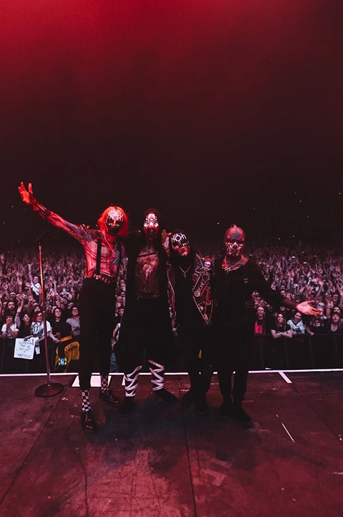

Sleep Token are an English rock band formed in London in 2016. Its members remain anonymous by wearing masks. After self-releasing their debut EP One in 2016, the band signed with Basick Records and issued a follow-up EP, Two, the next year. The group signed with Spinefarm Records and released their first full-length album Sundowning in 2019, which was followed in 2021 by This Place Will Become Your Tomb. A third album, Take Me Back to Eden, was released in May 2023. Their fourth album, Even in Arcadia, was released in May 2025, through RCA Records.
Sleep Token debuted in September 2016 with the release of their first single, "Thread the Needle". The track was followed in December by the band's debut EP One, which featured two additional songs plus alternative piano arrangements of all three tracks.
On February 28, 2017, they released a cover of "Hey Ya!", originally by OutKast.
In May 2017, it was announced that Sleep Token had signed with independent label Basick Records and would release their second EP Two in July. Ahead of the EP's release, the group issued two new singles — "Calcutta" in May and "Nazareth" in June. In the publication's exclusive premiere of "Calcutta", Metal Hammer writer Luke Morton described the song as "an odd and unique mix of technical metal and expansive indie soundscapes". Reviewing Two for Distorted Sound, Matt Corcoran also noted the combination of elements from multiple genres, explaining, "Across these three spellbinding tracks the band fully delivers on their genre-blending promise, moving between light indie atmospherics and dark, Meshuggah-esque heaviness and covering most of the spectrum in between".
Something, something
